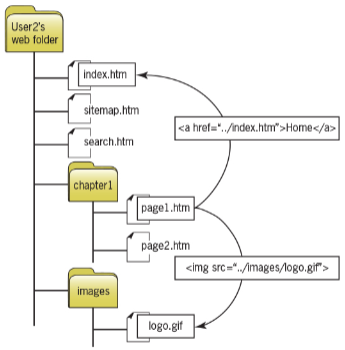

Intro. to Web Tooling

Instructor: Chris Fulton
Learning Objectives
- Development Tools and Environments
- Discuss and Compare Text Editors and IDE's (Integrated Development Environments)
- Explain the benefits of Local vs. Cloud Dev. Environments
- Understanding File Structure
- Compare Relative vs. Absolute file paths
- Discuss File Structure best practices
Development Tools
Text Editors ✦ Integrated Dev. Environments
- Text Editor - a software program that allows users to input and edit text. Allows you to create and edit a range of programming language files
- Integrated Development Environment (IDE) - a software suite that consolidates the basic tools developers need to write and test software. Typically, an IDE contains a code editor, a compiler or interpreter and a debugger that the developer accesses through a single graphical user interface (GUI).

Development Tools
Local Development ✦ Cloud Development
- Local Development - a software program that allows users to input and edit text. Allows you to create and edit a range of programming language files
- Cloud Development - a software suite that consolidates the basic tools developers need to write and test software. Typically, an IDE contains a code editor, a compiler or interpreter and a debugger that the developer accesses through a single graphical user interface (GUI).
Local/Desktop Development
| Advangtages | Disadvantages |
|---|---|
| Consistent Configuration | Complicated configuration management |
| Security | Product Version control |
| Familiarity and Confortability | Easy Access |
| Security | Decreased productivity |
| Limited accessibility | Poor collaboration |
Folder Paths
Absolute Paths ✦ Relative Paths
- Absolute Paths - a path that starts from the root folder and processes down the entire folder structure
- Relative Paths - a path is expressed relative to the location of the current document.
- File Path Location:
/ - means the root of the current drive
./ - means the current directory
../ - means the parent of the current directory

Setting a Directory Structure
- You build a site on a development computer but host it on a different computer
- The files for your web site must be transferred from the development computer to the hosting computer
- Your file structure must be transferable
- Use relative paths to indicate file locations
Single Folder Structure
- a files are placed in the root folder. Images, JS files, css files all exist in root folder.

Hierarchical Folder Structure
- additional folders are created within the root folder to categorize the different type of files. Images, JS files, css files will exist within their respective folder.

References
- https://searchsoftwarequality.techtarget.com/definition/integrated-development-environment
- http://duspviz.mit.edu/tutorials/localhost-servers/
- https://readwrite.com/2013/04/16/why-cloud-development-environments-are-better-than-desktop-development/
- https://automatetheboringstuff.com/chapter8/